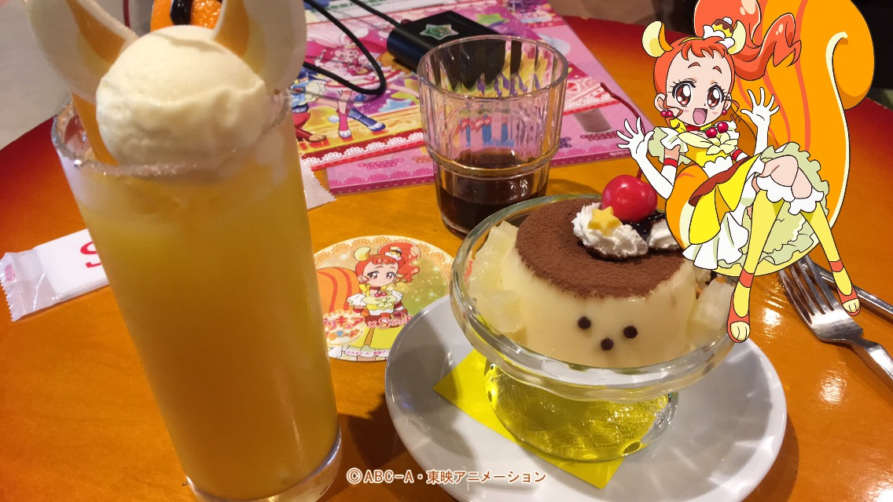
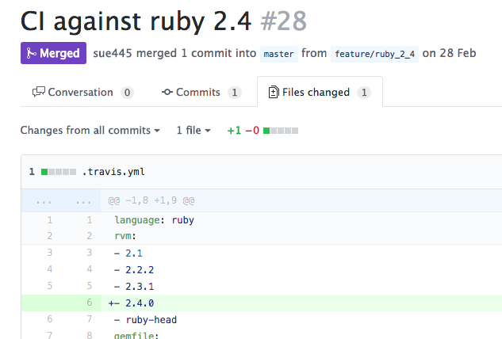
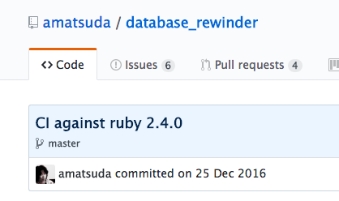
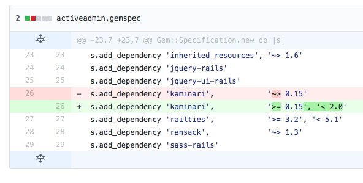
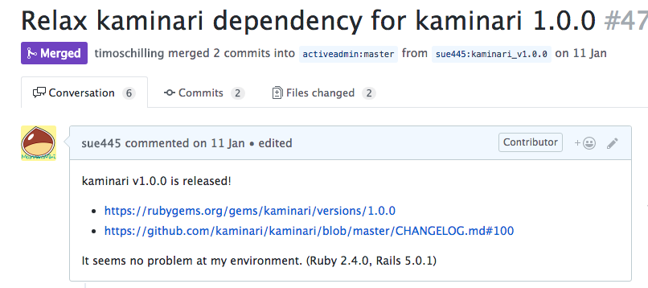
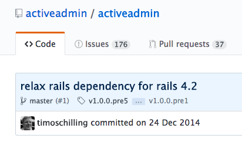
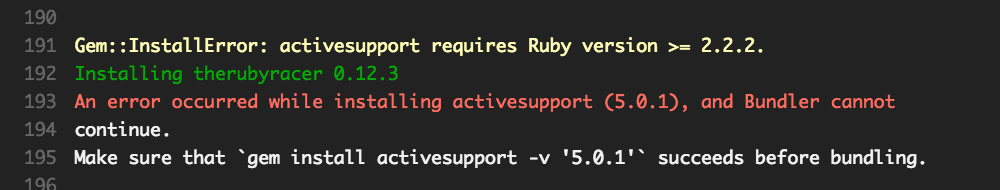
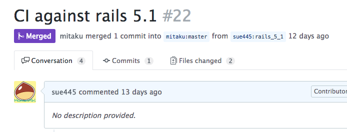
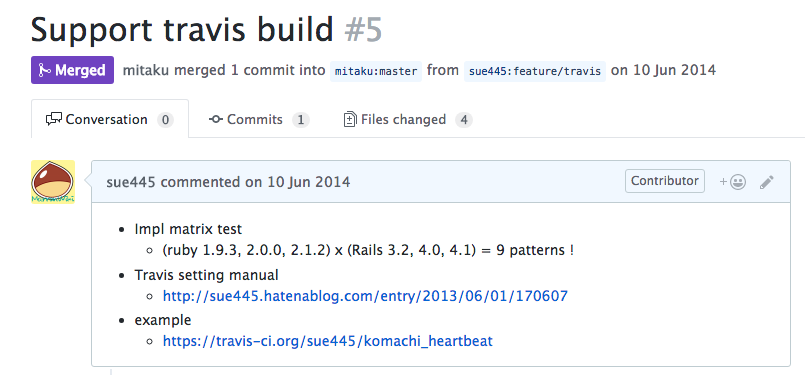

今日から使える！OSSプルリク集 #megurorb
sue445
2017/04/20 Meguro.rb#2
自己紹介 
- Go Sueyoshi a.k.a sue445
-
株式会社ドリコム 所属
- インフラストラクチャー部
- 社内gemを中心にアプリからインフラまでだいたいサーバサイドを浅く広く見てる
- 今まで作った主要なものは sue445 Advent Calendar 2016 - Qiita を参照
- 「ドリコムのプリキュアの人」として社内外で有名
- Twitterは上級者向けのアカウントなのでフォロー厳禁

今期の嫁：キュアカスタード

本気の嫁：キュアピース

今日話すこと
- OSSにプルリク出す時のあるあるネタを実用例を交えて紹介
1. ドキュメントのtypoなどを修正
- これが一番プルリクの難易度は低い
https://github.com/gitlabhq/gitlabhq/pull/7534
- GitLabのwebhookで実装はされているが、リファレンスから漏れているパラメータがいくつかあったので追加
- 「◯◯（プルリク番号）で追加されているけどその時にリファレンスに更新されていないよ！」って言えればベスト
- GitLabはAPIの実装とリファレンスの差異が結構多いので狙い目
- 今は GitHub ではなく https://gitlab.com/gitlab-org/gitlab-ce だけでissueなどを受け付けている
2. .travis.yml に新しいRubyのバージョンを追加
rvm:
- 2.1
- 2.2.2
- 2.3.1
# ここに2.4を追加したい
CI against ruby 2.4
https://github.com/sue445/index_shotgun/pull/28/files

英文の元ネタ
https://github.com/amatsuda/database_rewinder/commit/6a1f87c3a0729391bd24c68f38d28622d385479b

「CI against 〜」は使いやすいので定型句として覚えていていい
3. gemの新しいバージョンが出たので依存を緩めたい

https://github.com/activeadmin/activeadmin/pull/4722
- kaminari v1系が出た直後に、activeadminでkaminari 1系使うために依存を緩めたかった

英文の元ネタ
https://github.com/activeadmin/activeadmin/commit/7a861b723bd65ea174541cf2f23048143575cba8

「Relax ◯◯ dependency for △△△」も使いやすいので定型句として覚えていていい
4. activesupportやactiverecordに依存してるgemでRuby 2.2未満系でコケるので5系未満使うようにする
- 1年以上ビルドしてないようなリポジトリだと久しぶりのPRでビルドがコケる原因第1位

Gemfileにとりあえずこれ書いとけば bundle install できるのでPR送る
if Gem::Version.create(RUBY_VERSION) < Gem::Version.create("2.2.2")
# activesupport 5+ requires MRI 2.2.2+
gem "activesupport", "< 5.0.0"
end
- 「Ruby 2.2.2未満で動かんからとりあえずサポート切ったわ！」っていきなりPR送るのは穏やかじゃないので、Ruby 2.2.2未満だったらCIでactivesupport 5系使わないようにしてCIを正常な状態に戻すのが平和
- 実際にRuby 2.2.2未満のサポート切るかどうかはリポジトリオーナーの判断に委ねる
Tips：バージョンは文字列比較ではなく Gem::Version で比較した方がいい
"2.1.10" > "2.1.2"
#=> false
Gem::Version.create("2.1.10") > Gem::Version.create("2.1.2")
#=> true
"5.1.0" > "5.1.0.rc1"
#=> false
Gem::Version.create("5.1.0") > Gem::Version.create("5.1.0.rc1")
#=> true
5. Railsのrc出たからとりあえずビルドしようぜー！
https://github.com/mitaku/komachi_heartbeat/pull/22

.travis.ymlで複数gemfile対応してるのであればgemfile作って1行追加するだけ
gemfiles/rails5_1.gemfile
source "https://rubygems.org"
gem 'rails', "~> 5.1.0.rc1"
gemspec path: '../'
.travis.yml
gemfile:
- gemfiles/rails4_1.gemfile
- gemfiles/rails4_2.gemfile
- gemfiles/rails5_0.gemfile
- gemfiles/rails5_1.gemfile # <- 1行追加
正式版じゃないのでallow_failuresにしておいて、ビルドコケるのは許容する
matrix:
allow_failures:
# NOTE: There are unstable versions
- rvm: ruby-head
- gemfile: gemfiles/rails5_1.gemfile # TODO: Remove this after rails5.1 is released!
6. Travis CI対応してないリポジトリに .travis.yml 投げつける
- 自分のforkしたリポジトリでTravis CI設定してちゃんと動作確認した後でPR送るのが親切
- https://github.com/mitaku/komachi_heartbeat/pull/5
